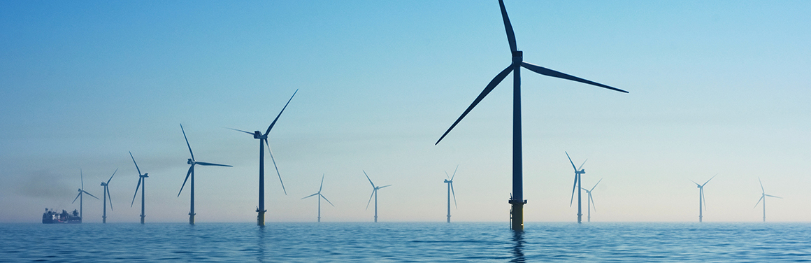

How Do We Reduce Greenhouse Gases?
To stop climate change, we need to stop the amount of greenhouse gases, like carbon dioxide, from increasing. For the past 150 years, burning fossil fuels and cutting down forests, which naturally pull carbon dioxide out of the air, has caused greenhouse gas levels to increase. There are two main ways to stop the amount of greenhouse gases from increasing: we can stop adding them to the air, and we can increase the Earth’s ability to pull them out of the air. This is called climate mitigation. There is not one single way to mitigate climate change. Instead, we will have to piece together many different solutions to stop the climate from warming. Below are descriptions of the main methods that we can use. Many of these solutions are already being implemented in places around the world. Some can be tackled by individuals, such as using less energy, riding a bike instead of driving, driving an electric car, and switching to renewable energy. Other actions to mitigate climate change involve communities, regions, or nations working together to make changes, such as switching power plants from burning coal or gas to renewable energy and growing public transit.
Use less energy
Taking steps to use less electricity, especially when it comes from burning coal or gas, can take a big dent out of greenhouse gas emissions. Worldwide, electricity use is responsible for a quarter of all emissions. Some steps that you can take to use less electricity are simple and save money - like replacing incandescent light bulbs with LED bulbs that use less electricity, adding insulation to your home, and setting the thermostat lower in the winter and higher in the summer, especially when no one is home. There are also new technologies that help keep buildings energy efficient, such as glass that reflects heat, low-flow water fixtures, smart thermostats, and new air conditioning technology with refrigerants that don’t cause warming. In urban and suburban environments, green or cool roofs can limit the amount of heat that gets into buildings during hot days and help decrease the urban heat island effect.
Green roof farming to minimize energy use for save our resources.
Generate electricity without emissions.
Renewable energy sources include solar energy, geothermal, wind turbines, ocean wave and tidal energy, waste and biomass energy, and hydropower. Because they do not burn fossil fuels, these renewable energy sources do not release greenhouse gases into the atmosphere as they generate electricity. Nuclear energy also creates no greenhouse gas emissions, so it can be thought of as a solution to climate change. However, it does generate radioactive waste that needs long-term, secure storage. Today, the amount of electricity that comes from renewable energy is growing. A few countries, such as Iceland and Costa Rica, now get nearly all of their electricity from renewable energy. In many other countries, the percentage of electricity from renewable sources is currently small (5-10%) but growing.
This is an image of several offshore wind turbines, with an ocean horizon. Wind turbines can be on land or in the ocean, where high winds are common.
Shrink the footprint of food.
Today, about a fifth of global carbon emissions come from raising farm animals for meat. For example, as cattle digest food, they burp, releasing methane, a powerful greenhouse gas, and their manure releases the greenhouse gases carbon dioxide and nitrous oxide. And forests, which take carbon dioxide out of the air, are often cut down so that cattle have space to graze. Eating a diet that is mostly or entirely plant-based (such as vegetables, bread, rice, and beans) lowers emissions. According to the Drawdown Project, if half the population worldwide adopt a plant-rich diet by 2050, 65 gigatons of carbon dioxide would be kept out of the atmosphere over about 30 years. (For a sense of scale, 65 gigatons of carbon dioxide is nearly two years of recent emissions from fossil fuels and industry.) Reducing food waste can make an even larger impact, saving about 90 gigatons of carbon dioxide from the atmosphere over 30 years.
Eating a plant-rich diet lowers greenhouse gas emissions.
Travel without greenhouse gas.
Most of the ways we have to get from place to place currently rely on fossil fuels - gasoline for vehicles and jet fuel for planes. Burning fossil fuels for transportation adds up to 14% of global greenhouse gas emissions worldwide. We can reduce emissions by shifting to alternative technologies that either don’t need gasoline (like bicycles and electric cars) or don’t need as much (like hybrid cars). Using public transportation, carpooling, biking, and walking, leads to fewer vehicles on the road and less greenhouse gases in the atmosphere. Cities and towns can make it easier for people to lower greenhouse gas emissions by adding bus routes, bike paths, and sidewalks.
Electric bicycles can be a way to get around without burning gasoline.
Reduce emissions from industry.
Manufacturing, mining for raw materials, and dealing with the waste all take energy. Most of the products that we buy - everything from phones and TVs to clothing and shoes - are created in factories, which adds up to about 20% of the greenhouse gases produced worldwide. There are ways to decrease emissions from manufacturing. Using materials that aren’t made from fossil fuels and don’t release greenhouse gases is a good start. For example, cement releases carbon dioxide as it hardens, but there are alternative products that don’t create greenhouse gases. Similarly, bioplastics made from plants are an alternative to plastics that come from fossil fuels. Companies can also use renewable energy sources to power factories and ship the products that they create in fuel-saving cargo ships.

Huge Amount of pollution produces through Industries. This is very harmful for us.
Take carbon dioxide out of the air.
Along with reducing the amount of carbon dioxide that we add to the air, we can also take action to increase the amount of carbon dioxide taken out of the air. The places where carbon dioxide is pulled out of the air are called carbon sinks. For example, planting trees, bamboo, and other plants increases the number of carbon sinks. Conserving forests, grasslands, peatlands, and wetlands, where carbon is held in plants and soils, protects existing carbon sinks. Farming methods such as planting cover crops and crop rotation keep soils healthy so that they are effective carbon sinks. There are also carbon dioxide removal technologies, which may be able to pull large amounts of greenhouse gases out of the atmosphere.
As the trees and other plants in a forest use sunlight to create the food they need, they are also pulling carbon dioxide out of the air.